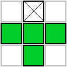
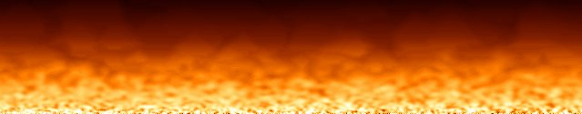
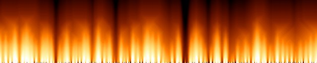
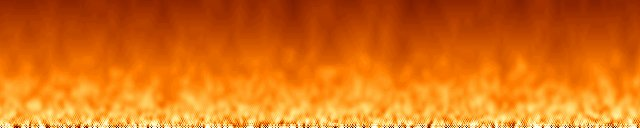

#include <cmath>
#include <string>
#include <vector>
#include <iostream>
#include "quickcg.h"
using namespace QuickCG;
//define the width and height of the screen and the buffers
const int screenWidth = 640;
const int screenHeight = 128;
// Y-coordinate first because we use horizontal scanlines
Uint32 fire[screenHeight][screenWidth]; //this buffer will contain the fire
Uint32 buffer[screenHeight][screenWidth]; //this is the buffer to be drawn to the screen
Uint32 palette[256]; //this will contain the color palette
int main(int argc, char *argv[])
{
//set up the screen
screen(screenWidth, screenHeight, 0, "fire");
//declarations
ColorRGB color; //used during palette generation
float time = getTime(), oldTime; //the time of this and the previous frame, for timing
//make sure the fire buffer is zero in the beginning
for(int y = 0; y < h; y++)
for(int x = 0; x < w; x++)
fire[y][x] = 0;
//generate the palette
for(int x = 0; x < 256; x++)
{
//HSLtoRGB is used to generate colors:
//Hue goes from 0 to 85: red to yellow
//Saturation is always the maximum: 255
//Lightness is 0..255 for x=0..128, and 255 for x=128..255
color = HSLtoRGB(ColorHSL(x / 3, 255, std::min(255, x * 2)));
//set the palette to the calculated RGB value
palette[x] = RGBtoINT(color);
}
//start the loop (one frame per loop)
while(!done())
{
//timing: set to maximum 50 milliseconds per frame = 20 frames per second
oldTime = time;
waitFrame(oldTime, 0.05);
time = getTime();
//randomize the bottom row of the fire buffer
for(int x = 0; x < w; x++) fire[h - 1][x] = abs(32768 + rand()) % 256;
//do the fire calculations for every pixel, from top to bottom
for(int y = 0; y < h - 1; y++)
for(int x = 0; x < w; x++)
{
fire[y][x] =
((fire[(y + 1) % h][(x - 1 + w) % w]
+ fire[(y + 1) % h][(x) % w]
+ fire[(y + 1) % h][(x + 1) % w]
+ fire[(y + 2) % h][(x) % w])
* 32) / 129;
}
//set the drawing buffer to the fire buffer, using the palette colors
for(int y = 0; y < h; y++)
for(int x = 0; x < w; x++)
{
buffer[y][x] = palette[fire[y][x]];
}
//draw the buffer and redraw the screen
drawBuffer(buffer[0]);
redraw();
}
}
|


fire[y][x] =
((fire[(y + 1) % h][(x - 1 + w) % w]
+ fire[(y + 2) % h][(x) % w]
+ fire[(y + 1) % h][(x + 1) % w]
+ fire[(y + 3) % h][(x) % w])
* 64) / 257;
|
